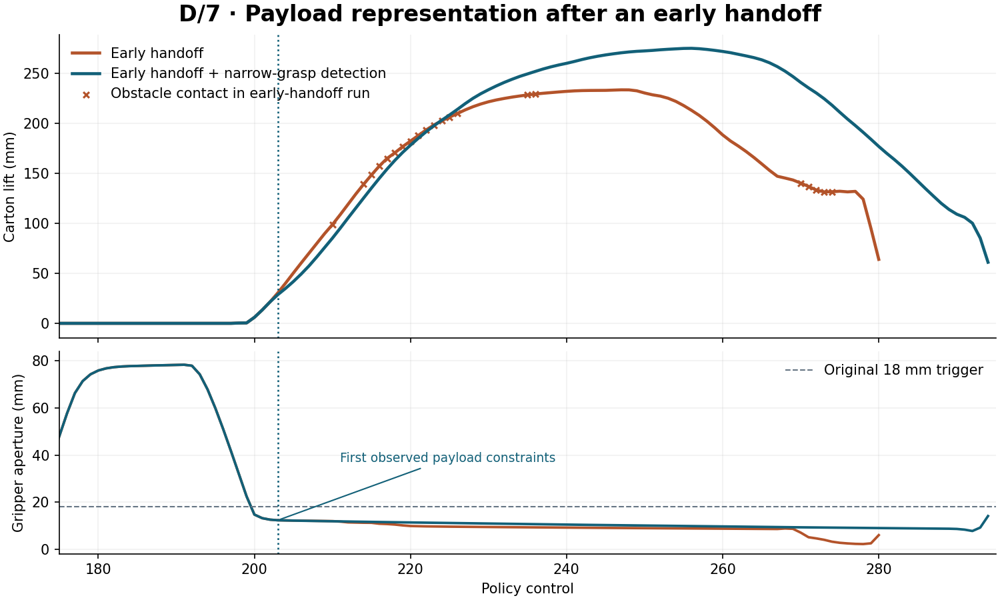

SafePi · Collision-Aware Pick and Place with π0.5
Can a frozen π0.5 policy pick up and place a carton when a bottle crowds the grasp approach?

The filter adjusted 82 of the first 100 actions. The carton stayed on the table for the full 450-control trial.
In my earlier GraspNet project, I used RGB-D perception to select collision-checked grasps on an RM65 arm. SafePi extends that question to grasping and transfer with a learned policy on a simulated Franka Panda in MuJoCo.
My contributions
- Extended AEGIS with clearance constraints for the Panda's arm links, gripper, and carried carton.
- Used two RGB-D views to plan a raised approach in tight scenes, then handed motion control back to the frozen π0.5 policy.
- Traced a transfer collision to a missed payload estimate and evaluated a narrow-grasp trigger in matched simulations.

From a stalled grasp to a completed transfer
The first SafePi controller kept clear of the bottle in the tightest layout and stalled before completing the grasp. A raised approach brought the gripper near the carton. An early handoff to π0.5 restored the grasp in the D/7 trial, with 21 control steps that recorded obstacle contact.
Diagnosing the missed payload
The gripper was holding the carton at an aperture below the original 18 mm trigger, so the safety filter had no payload constraint. I enabled RGB-D fitting for narrower grasps when closing and lift cues agreed. In the matched early-handoff runs, actions and robot states agreed through control 202. The updated filter introduced the first payload constraint at control 203 with a 12.3 mm aperture. The run recorded zero obstacle contacts.

Simulation results
Four bottle layouts across 12 matched trials
Each method ran on the same orange-juice task and initial states. For the first SafePi controller, three trials were used in development and the remaining nine ran after the controller was frozen.
| Controller | Zero contact | Placement ≤300 |
|---|---|---|
| Frozen π0.5 | 1/12 | 0/12 |
| AEGIS | 6/12 | 2/12 |
| AEGIS + link and payload constraints | 11/12 | 2/12 |
| First SafePi controller | 12/12 | 7/12 |
Download per-trial results (CSV)
Follow-up on the tightest layout
These trials used one bottle position and three policy seeds. D/7 was the development case. D/13 and D/23 were evaluated after freezing the follow-up controller.
| Controller | Zero contact | Placement ≤450 |
|---|---|---|
| First SafePi controller | 3/3 | 0/3 |
| + Planned approach | 3/3 | 2/3 |
| + Earlier handoff and narrow-grasp detection | 3/3 | 3/3 |
Approach comparison (CSV) · Follow-up results (CSV)
Complete placement requires reaching the basket, passing a fixed 30-control opening and retention test, and avoiding contact between the added bottle and the robot or selected task objects. The time budget includes the terminal test. The three follow-up placements took 324, 333, and 325 controls.
Limitations and next experiments
In the milk-carton scene, only one RGB-D view passed localization, so the approach planner stayed inactive and grasping failed. In the orange-juice runs, repeated closing and reopening after handoff consumed much of the 300-control budget. My next tests would target that delay, then evaluate the frozen controller on bottle positions kept out of development.
Built on the frozen OpenPI π0.5 LIBERO checkpoint and AEGIS / SafeLIBERO.